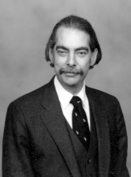

Please note: the AAS Obituaries are temporarily being hosted on this website while their full content is being ingested into the PubPub publishing platform newly adopted by the Bulletin of the American Astronomical Society. When the migration is complete, your existing links will take you to the final, migrated content. Contact peter.williams@aas.org with any questions.
Geoffrey Gardner Douglass (1942-2005)
Geoffrey Gardner Douglass passed away on 15 February 2005, following a long illness. Geoff was born 11 June 1942 in Rocky River, Ohio, and grew up there with a passion for science, theatre, and pets. He attended the nearby Case Institute of Technology (Cleveland, Ohio) before coming to the U.S. Naval Observatory on 28 April 1967. He worked at the USNO for over 30 years, until his retirement in January 1999. He was involved in the observing and measurement of parallax and double star plates on the SAMM and MANN measuring engines, and was stationed at Blenheim, New Zealand from 1985-1988 working at the Black Birch site on the Twin Astrograph Telescope. While there he and his wife Doris travelled extensively throughout New Zealand and Australia, He later worked with an early iteration of the USNO StarScan measuring machine. However, most of his work involved observations of visual double stars with the USNO 26-inch Clark Refractor, collaborating with F.J. ("Jerry") Josties on the photographic program in the late 1960s to the development of the USNO's speckle interferometry program throughout the 1990s.
Geoff collaborated closely with Charles Worley from 1968 until Charles's death in December 1997, writing much of the double star software and assisting in the production of the USNO's double star catalogs. This was a period of transition, when some 200,000 punch cards of the Lick IDS (Index Catalog of Double Stars) were transferred from Lick Observatory to the USNO, then converted to magnetic tape. This ultimately resulted in the 1984 WDS catalog (currently maintained online). It was often joked that the "W" and "D" in the WDS (officially the "Washington Double Star" catalog) really stood for "Worley" and "Douglass." The "Curmudgeon" and the "Dour Scot" were a team for nearly thirty years.
Geoff's first observation, of BU 442, was made 2 June 1967 with the USNO double star (photographic) camera, and his last, STF 342, was made on 28 November 1998 with the USNO speckle camera on the 26-inch refractor. In between he was an active collaborator and observer on these two different programs which, during his tenure at USNO, contributed over 18,000 measured positions to the WDS. While he discovered no new pairs, this was never his interest. He was much more interested in following up known systems and characterizing their motions to improve the catalog. During his long illness, even while at Cameron Glen Nursing Home, he continued to have an interest in the activities at the USNO and continued to be sought out for his knowledge on the instrumentation of the speckle camera. Late in 2004, when he was consulted on the location of a set of visual measures made in the early 1990s, his comment was that "every measure counted."
During his last year at the observatory he oversaw the publication of over 10,000 speckle observations, and guided the recently hired Brian Mason (Charles's replacement) in the management of the double star program.
Geoff battled illness for many years. He was a symbol of the worthiness of organ donation, living for some two decades following a kidney transplant, before succumbing to complications following the failure of the transplanted kidney.
Geoff is survived by his wife, Doris, with whom he shared a love of cats and classical music. They touched many lives both at the Observatory and at their church, Graham Road United Methodist, where both he and Doris were active leaders in many ministries. Geoff was very passionate about his religious views, going so far as to name his old computer ``crux.''
Geoff will be sorely missed by his many friends and colleagues.
Obituary written by: Brian D. Mason (U. S. Naval Observatory), William Hartkopf (U. S. Naval Observatory), Thomas Corbin (U. S. Naval Observatory (retired))
BAAS Citation: BAAS, 2005, 37, 1548
SAO/NASA ADS Bibcode: 2005BAAS...37.1548M